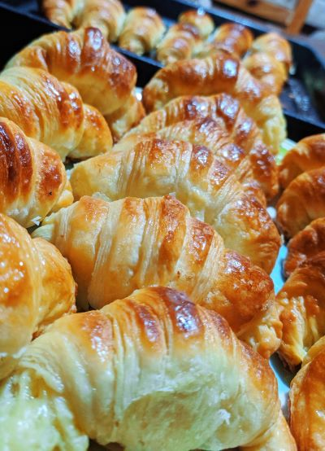

Medialunas de manteca

Medialunas de manteca ojaldradas, con fermentación en frio.
En esta ocasion vamos a ver una receta de medialunas ojaldradas.
Vamos a usar el concepto de fermentación en frio para obtener un panificado de mayor calidad.
Ingredientes
Para el amasijo
- Harina 000-100Gr
- Harina 0000-400Gr
- Azúcar-50gr
- Sal-10Gr
- Levadura-20Gr
- Leche-150cc
- Huevos-2u
Para el empaste
Procedimiento
- Dejar la manteca pomandose.
- Vamos a hacer un prefermento mezlcando los 100Gr de harina 000 con la leche y la levadura.
- Dejar reposar el prefermento hasta que se forme una esponja.
- Juntamos los secos: Harina 0000, azúcar, sal.
- Integramos a los secos los huevos y la esponja.
- Una vez integrado, amazar hasta formar una masa uniforme.
- Una vez formada la masa, estirarla y untar la manteca sobre la masa estirada.
- Imaginar la masa dividida en 3 y untar la manteca en el medio.
- Cerrar la masa llevando ambos lados hacia el centro.
- Hacer una vuelta simple y refrigerar por 24Hs.
- Pasadas las 24Hs, estirar haciendo otra vuelta simple y volver a refrigerar por 24Hs.
- Pasadas las 24Hs, estirar nuevamente con otra vuelta simple.
- Estirar la masa.
- Cortar los triangulos del tamaño deseado y estibar en una placa enmantecada.
- Dejar reposar hasta duplicar volumen.
- Hornear en un horno precalentado a 180 grados Celsius.